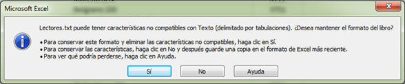

Información Georeferenciada
Práctica de geocodificacion
1. Transformando direcciones postales en coordenada geográficas
Utilizaremos dos herramientas diferentes para geolocalizar una serie de direcciones postales en un mapa. Para eso usaremos el set de datos Lectores.xlsx, utilizado en la práctica de OpenRefine (Clase 4).
1.1. Usando Google Earth Pro
Existen dos versiones de Google Earth, la común y la Pro. Esta última versión es gratuita desde el año 2016. Ambas versiones permiten realizar las siguientes tareas de visualización de una manera sencilla e intuitiva:
Explorar el detallado contenido geográfico.
Acercar la imagen desde el espacio hasta una calle.
Buscar la ubicación de empresas.
Visualizar rutas registradas con GPS y compartirlos con otros usuarios.
Sobrevolar ciudades (o todo el planeta) en 3D.
Retroceder en el tiempo con las imágenes históricas.
Sumergirse bajo la superficie del océano.
En el caso de Google Earth Pro además agrega las siguientes funcionalidades:
Calcular distancias y áreas utilizando herramientas de medición.
Utilizar Movie Maker para vuelos editados.
Imprimir imágenes de alta resolución para presentaciones e informes.
Importar archivos vectoriales para representar datos SIG en un mapa.
Crea mapas de direcciones con importación de hojas de cálculo.
Vamos a utilizar características de la versión Pro para esta práctica.
Paso 1: descargamos la planilla Lectores.xlsx desde el campus:
Paso 2: abrimos el archivo con el Excel y lo convertimos en un archivo separado por tabulaciones. Para ello seleccionamos Archivo -> Guardar como -> Texto (separado por tabulaciones) le dejamos el nombre Lectores y presionamos el botón Guardar.
Paso 3: Aparece una advertencia porque nuestro libro tiene dos hojas y solo se guardará la primera. Presionamos el botón Aceptar.
Paso 4: Se nos vuelve a advertir sobre la incompatibilidad del formato seleccionado con algunos de los datos de la hoja por medio de otro mensaje de advertencia. Presionamos el botón Si.

Paso 5: Finalmente salimos de Excel, cuando nos pregunte si queremos guardar los cambios contestamos que No.
Paso 6: Abrimos Google Earth Pro y seleccionamos Archivo -> Importar. Vamos completando las pantallas que nos parecen con los datos que figuran en las siguientes figuras: en la primera pantalla se debe seleccionar Delimitado y Tabulación. Nos presenta una vista preliminar de los datos a importar, si se ven los datos correctamente presionamos el botón Siguiente.
Paso 7: La segunda pantalla nos permite indicar en que columnas/atributos/campos se presentan los datos de latitud y longitud, como en este caso no contamos con esa información vamos a tildar la opción Este conjunto de datos no contiene información de latitud y longitud, sino de direcciones postales y presionamos el botón Siguiente.
Paso 8: En la tercera pantalla se nos permite indicar que campos contienen la información postal, si está toda en una sola columna o si se encuentra en más de un campo, en este caso seleccionamos Las direcciones se separan en varios campos y especificamos que el Campo de calle es Direccion y el campo de código postal es Código Postal. El resto los dejamos con N/A, ya que no contamos con esa información. Presionamos el botón Siguiente.
Paso 9: La última pantalla es opcional y nos permite indicar el tipo de dato de los campos donde se encuentra la información de la dirección postal, si el archivo fue leído correctamente, los tipos especificados son correctos y no se deben cambiar, verifiquemos que sea así: Nombre es cadena (sinónimo de texto o carácter) al igual que la Dirección, mientras que el código postal es un entero (sinónimo de numérico). Luego presionamos el botón Finalizar.
Se nos presenta un cuadro de diálogo donde se indica el avance la importación de los datos:
Paso 10: Cuando la importación termina, se presenta un listado con aquellos casos que no se pudieron resolver y al lado de cada caso dos opciones: una dice ¿Quisiste decir?… Y la otra Ingresar la nueva dirección. En el primer caso, cuando presionamos el botón nos sugiere opciones de direcciones, en el segundo caso nos permite editar el texto agregando información o corrigiéndolo para analizar nuevamente si es factible ubicar el punto correspondiente.
En caso que la nueva información ingresada permita resolver la localización, el botón se deshabilita (se pone en color gris) con la leyenda La reparación fue exitosa, caso contrario se presenta un cuadro de dialogo que dice Fallo la recuperación de codificación geográfica.
Paso 11: Cuando terminamos de revisar y corregir aquellos casos posibles, presionamos en el botón Aceptar. Nos presentará un cuadro de diálogo que nos consulta si queremos aplicar una plantilla a los datos, contestamos que Si.
Paso 12: configuramos la plantilla, primero le indicamos cual va a ser el campo que le va a dar la etiqueta a los casos. Le indicamos Nombre
Luego especificamos el color que tendrá el ícono que marcará el lugar de cada caso en el mapa. Esta característica se puede dar a partir de información en un campo de la tabla de datos, asi por ejemplo, podríamos tener un campo que sea color, con un color diferente para diferentes tipos de lectores, por ejemplo: amarillo para productores, azul para entidades de gobierno, verde para empresas agropecuarias, naranja para docentes, rojo para estudiantes, etc.
Después del color nos solicita que especifiquemos el tipo de ícono para representar los casos:
Cuando terminamos con todos los detalles presionamos el botón Aceptar. Seguidamente, nos permite guardar la plantilla, con el objetivo de usarla con otro set de datos, en caso que lo necesitemos, evitando tener que volver a indicar todas estas opciones nuevamente. Le dejamos el nombre sugerido de Lectores.

Paso 13: para visualizar los datos, en el cuadro de búsqueda escribimos Santa Rosa, La Pampa, el mapa se posiciona sobre la ciudad. En la sección izquierda, en el cuadro llamado Lugares se presenta un área que se llama Lugares temporales y dentro de la misma aparece Lectores.txt, cuando expandimos dichas carpetas se listan todos los casos que fueron localizados exitosamente presentando su nombre.

Para ver donde está ubicado cada lector en el mapa, hacemos click en el check box de la carpeta lectores, aparece un mapa similar al de la siguiente figura:

Si hacemos zoom en el mapa, los puntos se empezarán a acomodar y podremos ver el detalle de la ubicación, haciendo click sobre uno de ellos se presentará la información que importamos desde la tabla de Lectores.txt

Paso 14: para guardar la nueva capa de información, hacemos click con el botón derecho del mouse sobre Lectores.txt y seleccionamos la opción Guardar lugar como…, elegimos el tipo KML y le dejamos de nombre Lectores.

1.2. Utilizando Excel Geocoding Tool
Paso 1: Se descarga la herramienta desde http://excelgeocodingtool.com/ y la abrimos en Excel, se debe habilitar la edición y las macros. La herramienta se encuentra disponible en el campus.
Paso 2: la herramienta utiliza Bing para referenciar, por lo que necesitamos obtener una llave para que funcione. La practica previa a esta clase implicada obtener una clave de API, si no tienen el dato de la APIKey disponible deben:
Ingresar a su cuenta de BingMaps https://www.bingmapsportal.com/
Seleccionar My Account -> My Keys
Aparecen los detalles de la clave y la copiamos haciendo click en el link Copy Key para utilizarla en la planilla de Excel (si tenemos bloqueado la opción de copiar desde el link, podemos seleccionar la llave y presionar Ctrl+C).

- Copiamos la clave en la planilla (Ctrl+V)

Paso 3: Chequeamos que las Macros de Excel estén habilitadas, presionando el botón Are Macros enabled?, si aparece el cuadro de diálogo las macros funcionan correctamente. De lo contrario se deben habilitar, para ello se cierra la planilla, se vuelve a abrir y se presiona en Habilitar Macros.

Paso 4: vamos a preparar los datos para copiarlos, abrimos la planilla de Lectores.xlsx y agregamos una columna que diga Argentina en todas las celdas que haya datos. También agregamos otra columna donde vamos a unir todos los datos en un solo campo, para ello escribimos la siguiente función:
=CONCATENAR(B2,“,”,C2,“,”,D2)
Paso 5: Copiamos la columna donde concatenamos los datos de la dirección y la pegamos en la hoja Geocode. Se pueden indicar direcciones completas, ciudad + estado/provincia, código postal, cruce de calles, nombre de un lugar o localizaciones internacionales.
Paso 6: presionamos el botón Geocode all rows, nos presenta un detalle de la cantidad de direcciones copiadas, la cantidad que geocodificó y el porcentaje que encontró.

En la lista de direcciones, va completando los datos correspondientes a cada dirección lugar: Latitud, Longitud, confianza con la que realizó la localización y el link para verlo en el mapa.

Paso 7: cuando finalice copiamos las columnas de Latitud y Longitud y se las pegamos a la planilla de Lectores.xlsx, la guardamos como Excel y luego la guardamos como archivo delimitado por tabulaciones, contestamos que Si y Aceptar a las advertencias de Excel con respecto del formato del archivo.